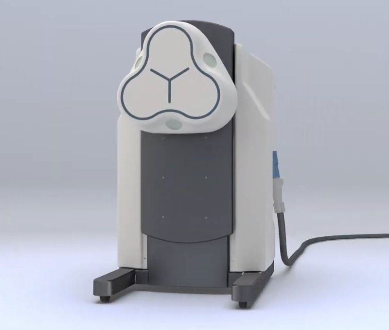

Commercial and clinical-stage systems · navion_nanoflex2025
Navion
Nanoflex magnetic telerobotic platform (Navion per S8)

1 / 4


- Family
- Commercial and clinical-stage systems (magnetic-navigation)
- Devices
- 0.035-in magnetic guidewire; catheter
- Degrees of freedom
- tip direction by field vector + advance of two devices
- Push
- Magnetic
- Twist
- Field direction
- Tested up to
- Phantom
- Sim-to-real
- None found — No simulation-trained controller found for this robot.
Testing
- Highest level
- Phantom
- What was tested
- 7,000 km in-vitro coronary angiography, 260 runs, latency 134-143 ms (madder2025_transatlantic via S8); CTO reports 100% navigation + clot retrieval (magneticsmag, web)
- Key numbers
- no first-in-human found; FIH/FDA submission once planned for Q3 2023 (slipped)
Mechanism
- Push (translation)
- magnetic
- Twist (rotation)
- magnetic (mobile 3-electromagnet field generator)
- Device range
- N.R.
- Target anatomy
- stroke (remote thrombectomy), coronary
Sensing and interface
- Force sensing
- none
- Leader and haptics
- no
- Imaging
- mobile field generator compatible with C-arm
- Sterility
- N.R.
Size
- Footprint (mm)
- N.R.
- Mass (kg)
- N.R.
Simulation
- Simulation model
- none found
- Sim-trained controller
- none found
Versions
- Lineage
- N.R.
Sources
- Transatlantic Telerobotic Coronary Angiography · JACC: Advances, 2025 · doi:10.1016/j.jacadv.2024.101456 [madder2025_transatlantic]
- Robot-Assisted Cardiovascular Interventions · Journal of the Society for Cardiovascular Angiography & Interventions, 2025 · doi:10.1016/j.jscai.2025.102568 [george2025_robot]
Notes
- Notes
- The name Navion was not found in any 2026 source I opened (search found nothing for "Navion"); S8 carries it from a paper. Treat the name as unverified.
This record
- Read level
- web
- Picture
- frame t = 5.0 s of https://nanoflexrobotics.com/wp-content/uploads/2024/01/home.mp4 (1280x720, home-page video) ↗ — licence: press image (Nanoflex Robotics); grade B
- Picture changes
- ffmpeg still at 5.0 s, cropped (300,20)-(1100,700)
- Found by
- commercial: Search of commercial and clinical-stage systems.
- Data
- JSON · YAML:
records/robots/navion_nanoflex2025.yaml - Correction
- Suggest a correction [repository not created yet]